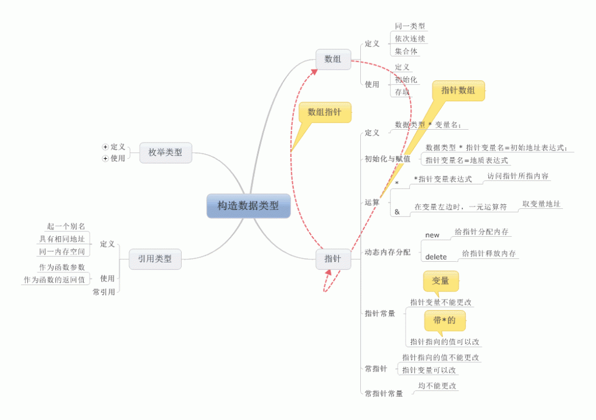
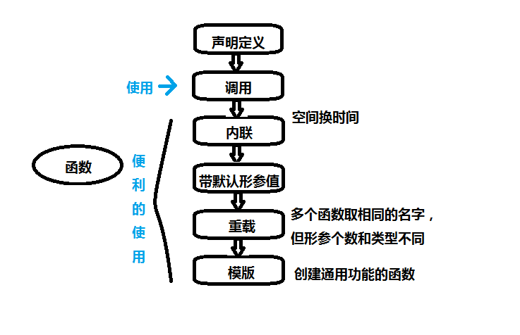

再次拿起C++的课本这种感觉也很不错，毕竟比起第一次的感觉来已经不再陌生，虽然开始时有抵触，但随着深入的学习，理解的更加透彻，突然觉得第一次没过也是一种幸运，深刻理解了老师说的学习一次hold不住，要来两三遍才可以，下面来总结一下C++的学习
学习相同总结不同
学习过VB 我们都知道了三种结构呀，数据类型呀，这些都大同小异在这就说说不同吧！构造数据类型：
如图：

函数：
如图：

那么对于新增的知识，类与对象请参看我的博客：
http://blog.csdn.net/hejingyuan6/article/details/7960730
我觉得每一种语言就像派生类一样，继承基类的部分，加上新增部分就是一个新的事物，我们学习它们，不要把每一种语言都看成是新的东西，在原有的知识基础上来学习，这样不但能和已有的知识产生共鸣，激励我们学习，而且还可以帮助我们加深理解！对于C++来说我们学习的重点也就在于面向对象部分，每一个新的东西都有它出现的必要，了解它的功能，对于使用就要靠自己的多多练习了！